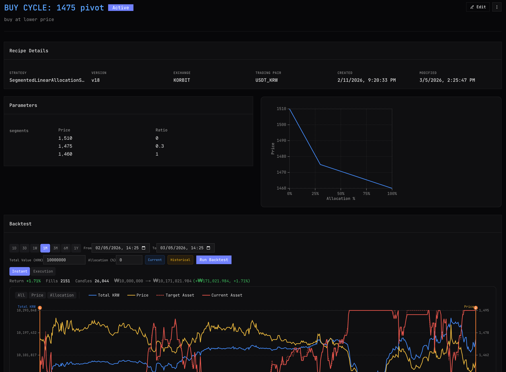

Piecewise-linear recipes that map price to allocation smoothly — no rigid grid steps.
Core Concept
A Recipe is traig's trading strategy unit. It maps price to allocation using piecewise-linear segments — smooth, continuous, no steps.
Each recipe defines how much of your portfolio should be in the asset at any given price. As price moves, traig automatically rebalances to match your recipe using maker-only orders.
Unlike grid bots that react at fixed intervals, a recipe defines behavior across its entire range. And when price moves beyond that range, automatic transitions hand off to the next strategy seamlessly.

Design
Segments define price ranges and their allocation slopes. You control exactly how aggressive or conservative each zone is.
Set steep slopes for high-conviction zones, gentle slopes where you want to move conservatively. Each segment is independently tuned.
Define each segment as buy-only, sell-only, or both. Prevent unwanted behavior in specific price zones with precise directional control.
When price moves beyond a recipe's range, traig automatically transitions to the next strategy. No manual stop-and-restart — your system adapts on its own.
Segments connect at control points — you define allocation at key price levels, and traig draws smooth ramps between them. The result is a strategy that feels natural, not mechanical. Increase intensity where you have conviction. Pull back where you're uncertain. Every inflection point is yours to control.
Automation
Recipes can transition automatically based on conditions you set. No manual "stop bot, start new bot" — traig handles the switch seamlessly.
Set it up once, let it adapt. When conditions change, your strategy changes with them.
Example
Switch from a range-trading recipe to a trend-following recipe when volatility spikes — automatically, without interrupting execution.
Seamless handoff
Transitions are smooth — traig blends from one recipe to the next without abrupt position changes or missed rebalancing windows.
Recipe transition flow
Active when market is ranging. Buys dips, sells rips within a defined band.
Automatically activated. Adjusts allocations to ride momentum rather than fade it.
Grid bots were a good start. But markets deserve better. traig's piecewise-linear approach gives you the precision of a continuous function with the simplicity of defining a few control points.
Fixed intervals, equal order sizes, no action outside range
Smooth allocation, automatic transitions, zone-specific intensity
| Grid Bot | traig | |
|---|---|---|
| Price-Action | Discrete (staircase) | Continuous (smooth ramp) |
| Out of Range | No action | Automatic strategy transitions |
| Zone Intensity | Uniform everywhere | Aggressive or conservative per zone |
| Strategy Switch | Manual stop → restart | Automatic transition |
| Management | Parameter input | AI conversation |
| Execution | Taker orders at grid levels | Maker-only default, strategic taking, ask/bid-only, speed control |